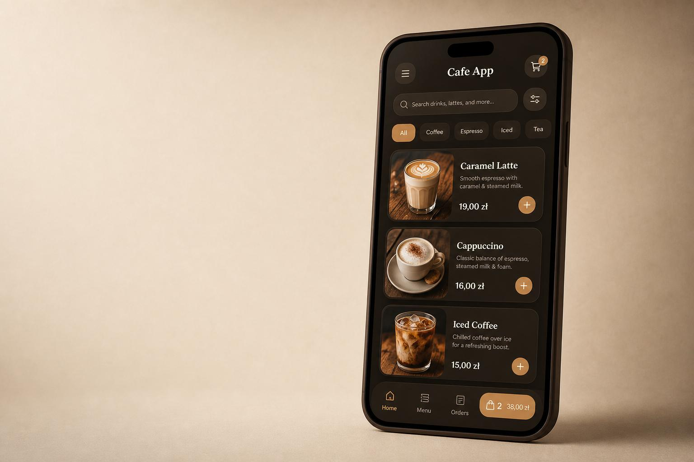

Aplikacja · Gastronomia
Cafe App
- Projekt UX/UI dla urządzeń mobilnych
- Katalog produktów i zamówienia
- Konto klienta i historia zamówień
- Gotowość do dalszego rozwoju
Tworzenie aplikacji dla firm
Cennik aplikacji i automatyzacji